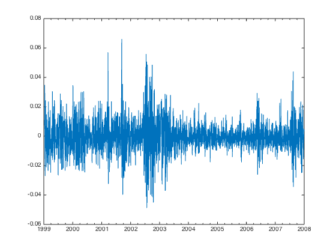
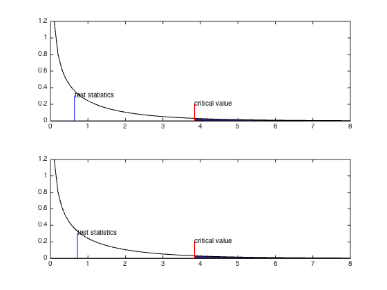

Bactesting Value-At-Risk
Contents
Import the data
raw = xlsread('daily.xlsx');
Dates = num2str(raw(:,1));
FTSE100Losses = -raw(:,2);
clearvars raw;
DateNums = datenum(Dates,'yyyymmdd');
DateStrings = datestr(DateNums);
T = length(FTSE100Losses);
TE = T - 500;
fprintf('Estimation window start=%s, stop=%s\n',...
datestr(DateNums(1)),datestr(DateNums(TE)));
fprintf('Testing window start=%s, stop=%s\n',...
datestr(DateNums(TE+1)),datestr(DateNums(T)));
plot(DateNums,FTSE100Losses);
set(gca,'XMinorTick','on');
datetick();
Estimation window start=11-Jan-1999, stop=09-Jan-2006
Testing window start=10-Jan-2006, stop=31-Dec-2007

Collecting VaR and Hit Sequence
Mdl = garch('Offset',NaN,'GARCH',NaN,'ARCH',NaN, 'Distribution','t');
VaR99 = zeros(T-TE,1);
VaR95 = zeros(T-TE,1);
I99 = zeros(T-TE,1);
I95 = zeros(T-TE,1);
for t = TE:T-1
X = FTSE100Losses(t-TE+1:t);
EstMdl = estimate(Mdl,X,'Display','off');
mu = EstMdl.Offset;
a0 = EstMdl.Constant;
a1 = EstMdl.ARCH{1};
b1 = EstMdl.GARCH{1};
nu = EstMdl.Distribution.DoF;
Sig2 = infer(EstMdl, X);
sig2_t = Sig2(end);
ep2_t = (X(end) - mu)^2;
sig2_tplus1 = a0 + a1 * ep2_t + b1 * sig2_t;
sig_tplus1 = sqrt(sig2_tplus1);
scale = sqrt((nu-2)/nu);
vaR99 = mu + sig_tplus1 * scale * tinv(0.99, nu);
vaR95 = mu + sig_tplus1 * scale * tinv(0.95, nu);
VaR99(t-TE+1) = vaR99;
VaR95(t-TE+1) = vaR95;
if FTSE100Losses(t+1) > vaR99
I99(t-TE+1) = 1;
end
if FTSE100Losses(t+1) > vaR95
I95(t-TE+1) = 1;
end
end
Visualize Hit Sequence
subplot(2,1,1);
plot(DateNums(TE+1:T), FTSE100Losses(TE+1:T));
hold on;
plot(DateNums(TE+1:T), VaR95);
for t = TE+1:T
if I95(t-TE)
line(DateNums([t t]), ylim, 'Color', 'Green');
end
end
datetick();
hold off;
subplot(2,1,2);
plot(DateNums(TE+1:T), FTSE100Losses(TE+1:T));
hold on;
plot(DateNums(TE+1:T), VaR99);
for t = TE+1:T
if I99(t-TE)
line(DateNums([t t]), ylim, 'Color', 'Green');
end
end
datetick();
hold off;

Test unconditional coverage
include>unctest.m</include
disp(' ');
disp('================ VaR95 ================')
subplot(2,1,1);
LR_uc95 = uctest(0.95,I95);
modelfit(LR_uc95, 1, 0.95);
disp('================ VaR99 ================')
subplot(2,1,2);
LR_uc99 = uctest(0.99,I99);
modelfit(LR_uc99, 1, 0.95);
================ VaR95 ================
Chi-square with 1-dof :
Alpha=0.950, Critical Value=3.841
LR=0.642, P-Value=0.423
Accept null hypothesis
================ VaR99 ================
Chi-square with 1-dof :
Alpha=0.950, Critical Value=3.841
LR=0.719, P-Value=0.397
Accept null hypothesis

Test independence
include>indtest.m</include
disp(' ');
disp('================ VaR95 ================')
subplot(2,1,1);
LR_ind95 = indtest(0.95, I95);
modelfit(LR_ind95, 1, 0.95);
disp('================ VaR99 ================')
subplot(2,1,2);
LR_ind99 = indtest(0.99, I99);
modelfit(LR_ind99, 1, 0.95);
================ VaR95 ================
Chi-square with 1-dof :
Alpha=0.950, Critical Value=3.841
LR=3.581, P-Value=0.058
Accept null hypothesis
================ VaR99 ================
Chi-square with 1-dof :
Alpha=0.950, Critical Value=3.841
LR=0.199, P-Value=0.655
Accept null hypothesis

Joint test
disp(' ');
disp('================ VaR95 ================')
subplot(2,1,1);
LR_join95 = LR_uc95 + LR_ind95;
modelfit(LR_join95, 2, 0.95);
disp('================ VaR99 ================')
subplot(2,1,2);
LR_join99 = LR_uc99 + LR_ind99;
modelfit(LR_join99, 2, 0.95);
================ VaR95 ================
Chi-square with 2-dof :
Alpha=0.950, Critical Value=5.991
LR=4.223, P-Value=0.121
Accept null hypothesis
================ VaR99 ================
Chi-square with 2-dof :
Alpha=0.950, Critical Value=5.991
LR=0.918, P-Value=0.632
Accept null hypothesis